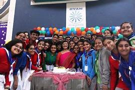
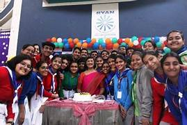

Children’s Day, celebrated on November 14th, is a fun-filled occasion at Godavari School. The day is dedicated to our students, with special programs and activities planned for their enjoyment. Teachers often perform for the students through dances, songs, or short plays, making the day even more special. Games, gifts, and sweet distributions add to the excitement, ensuring smiles on every child's face.
Children’s Day
Date: 14th November 2024
 
